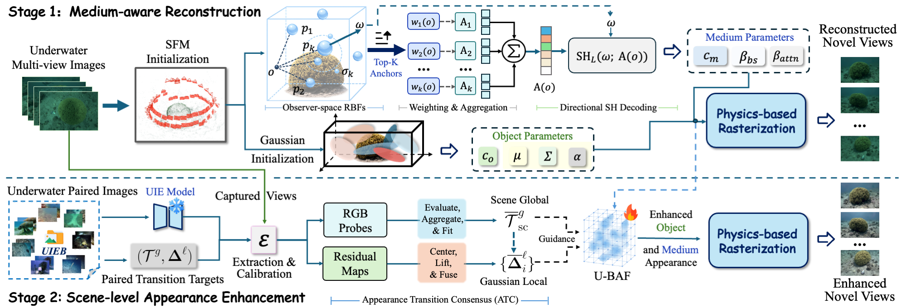

01🧊
Enhancement lives in 3D
A persistent enhanced Gaussian scene replaces independent post-processing of rendered views.
via Appearance Transition Consensus
Motivation
Overview
Underwater 3D reconstruction faithfully reproduces the color shifts and visibility loss of captured views, while physical inversion may leave estimation errors in the recovered scene appearance. We formulate Underwater Scene-level Enhancement (USE) as learning a persistent, visibility-enhanced 3D scene representation from degraded multi-view underwater observations, enabling consistent enhanced rendering. Realizing USE requires both a reliable scene representation for enhancement and a consistent enhancement target without paired enhanced 3D data. Therefore, we present 3D-USE, a two-stage framework. First, MediumRBF establishes a medium-aware Gaussian scene by representing water effects with shared radial-basis anchors and explicitly decomposing object and medium contributions. Based on this fixed scene representation, Appearance Transition Consensus (ATC) transfers paired 2D UIE knowledge into scene-global and Gaussian-local targets, avoiding direct supervision from inconsistent enhanced views. An Underwater Bilateral Appearance Field (U-BAF) then realizes these targets in Gaussian radiance and medium appearance. The scene directly renders enhanced novel views without a 2D UIE model at inference. Experiments on real underwater scenes show improved visibility and cross-view consistency while preserving reconstruction quality.
A persistent enhanced Gaussian scene replaces independent post-processing of rendered views.
MediumRBF separates object appearance from water-induced effects over shared scene geometry.
ATC consolidates 2D enhancement knowledge into scene-global and Gaussian-local guidance.
Method

MediumRBF models water-induced effects through shared radial-basis anchors, establishing explicit object and medium components over reliable Gaussian geometry.
ATC forms fixed scene-global and Gaussian-local targets. U-BAF realizes their consensus in object and medium appearance before physics-based rasterization.
Results
Qualitative videos first show reconstruction and enhancement along matched camera paths, followed by quantitative comparisons on the evaluation benchmarks.
Quantitative Comparison
Results are reported on held-out views, with scene-macro averaging for the multi-scene benchmarks.
Qualitative Comparison
Use the synchronized controls to inspect geometry, fine texture, color correction, and visibility.
Enhancement Quality
Two synchronized videos show the complete frame for judging color correction, visibility, and spatial uniformity.
Quantitative enhancement
Higher is better, except wLPIPS.
| Method | SeaThru-4 | DRUVA-20 | D3 | D5 | wLPIPS ↓ |
||||||||
|---|---|---|---|---|---|---|---|---|---|---|---|---|---|
| UCIQE | URanker | MUSIQ | UCIQE | URanker | MUSIQ | UCIQE | URanker | MUSIQ | UCIQE | URanker | MUSIQ | ||
| WaterSplatting | 0.5083 | 1.361 | 58.529 | 0.385 | −0.856 | 33.193 | 0.470 | 0.541 | 58.833 | 0.499 | 0.690 | 55.568 | 0.173 |
| SeaSplat | 0.5879 | 1.555 | 54.470 | 0.518 | −0.186 | 28.252 | 0.504 | 1.007 | 58.251 | 0.442 | −0.895 | 40.648 | 0.209 |
| Plenodium | 0.5034 | 1.058 | 58.370 | 0.395 | −0.792 | 34.786 | 0.483 | 0.705 | 60.158 | 0.443 | 0.033 | 52.456 | 0.158 |
| MarineSTD-GS | 0.5219 | 0.918 | 55.890 | 0.447 | −0.567 | 39.070 | 0.443 | 0.416 | 56.246 | 0.413 | −0.117 | 54.424 | 0.216 |
| 3D-UIR | 0.6087 | 1.658 | 54.540 | 0.537 | 0.174 | 32.752 | 0.519 | 1.356 | 59.351 | 0.468 | 0.137 | 51.991 | 0.208 |
| 3D-USE (Ours) | 0.6085 | 1.679 | 59.881 | 0.575 | 0.456 | 36.598 | 0.543 | 2.034 | 62.993 | 0.513 | 1.027 | 58.324 | 0.147 |
SeaThru-4 and DRUVA-20 are scene-macro averages; wLPIPS is averaged over all 26 scenes. Bold and underline denote best and second-best results.
Reconstruction Quality
Play the matched camera path to inspect structural stability, then move the detail region to examine boundaries and fine textures.
Play or drag horizontally to compare.
All methods use matched viewpoints and their native underwater reconstruction outputs.
Quantitative reconstruction
Higher is better, except LPIPS.
| Method | SeaThru-4 | DRUVA-20 | D3 | D5 | FPS ↑ |
||||||||
|---|---|---|---|---|---|---|---|---|---|---|---|---|---|
| PSNR | SSIM | LPIPS | PSNR | SSIM | LPIPS | PSNR | SSIM | LPIPS | PSNR | SSIM | LPIPS | ||
| WaterSplatting | 29.340 | 0.919 | 0.129 | 27.007 | 0.864 | 0.357 | 27.380 | 0.776 | 0.253 | 29.113 | 0.817 | 0.313 | 99.78 |
| SeaSplat | 27.146 | 0.878 | 0.184 | 22.866 | 0.828 | 0.388 | 27.885 | 0.785 | 0.282 | 27.113 | 0.806 | 0.382 | 100.77 |
| MarineSTD-GS | 30.034 | 0.901 | 0.160 | 26.472 | 0.856 | 0.364 | 29.510 | 0.781 | 0.316 | 30.237 | 0.818 | 0.329 | 41.13 |
| Plenodium | 30.331 | 0.922 | 0.125 | 27.413 | 0.866 | 0.335 | 28.686 | 0.803 | 0.218 | 29.088 | 0.817 | 0.314 | 91.60 |
| 3D-UIR | 28.260 | 0.889 | 0.179 | 25.432 | 0.820 | 0.354 | 28.098 | 0.830 | 0.283 | 28.973 | 0.823 | 0.324 | 42.74 |
| 3D-USE (Ours) | 30.369 | 0.924 | 0.124 | 27.495 | 0.867 | 0.352 | 29.759 | 0.858 | 0.183 | 31.400 | 0.908 | 0.235 | 105.36 |
SeaThru-4 and DRUVA-20 are scene-macro averages. Bold and underline denote best and second-best results.
Citation
@article{yuan2026three_duse,
title = {3D-USE: From Image-Level to Scene-Level Underwater Enhancement},
author = {Yuan, Jieyu and Zhang, Yuanlin and Li, Jihong and Guo, Chun-Le and Lu, Huimin and Li, Chongyi},
journal = {arXiv preprint arXiv:2608.28020},
year = {2026},
eprint = {2608.28020},
archivePrefix = {arXiv},
primaryClass = {cs.CV},
url = {https://arxiv.org/abs/2608.28020}
}Feel free to contact us at jieyuyuan.cn[AT]gmail.com for any questions or collaborations.